과학기술혁신정책 — 혁신정책의 세 프레임
본문은 강의 내용 기준입니다. 보충 표지는 외부 지식입니다.
한국의 R&D 투자와 산업정책에서 과학기술혁신정책으로
Korea's R&D investment; from industrial policy to STI policy
한 줄 정의
한국은 GDP 대비 약 5%를 R&D에 쓰는 "공부하는 데 돈을 많이 쓰는 나라"다. 그런데 기업 R&D의 절반 이상을 삼성 혼자 하고, 정부는 거의 모든 부처가 R&D를 하지만 다 똑같이 첨단기술 개발을 한다. 정책의 무게중심은 20세기의 산업을 키우는 산업정책에서 R&D 활동을 지원하는 과학기술혁신정책으로 한 단계 내려왔다.
쉽게 말하면 보충
학원비를 전국에서 제일 많이 쓰는 집이다. 그런데 형제 중 한 명(삼성)이 학원비의 절반 이상을 쓰고, 나머지 식구들은 과목이 달라도 다 같은 코딩 학원(AI)에 다닌다. 교수님의 질문은 "정말 필요해서 다니는 건지 따져 봐야 한다"는 것이다.
핵심 내용
슬라이드 (W07a p5–6)
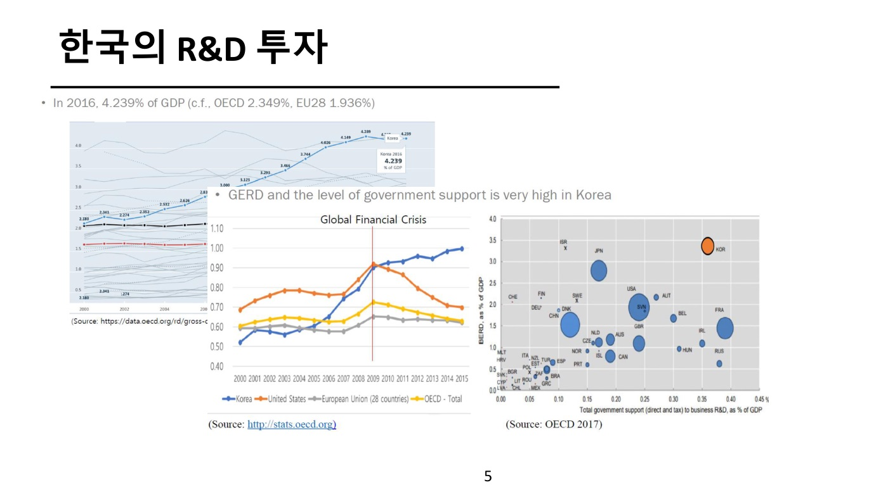
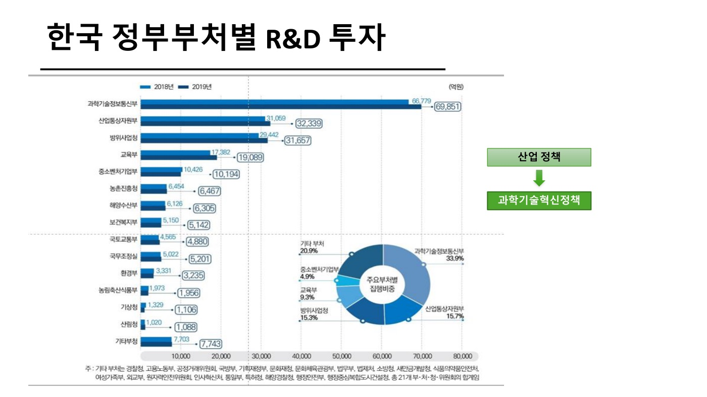
1) 규모와 구조
- GDP 대비 약 5%, 계속 늘고 있다. 약 100조 원 남짓 중 약 70%가 민간, 30%가 정부. 글로벌 금융위기 이후 다른 나라는 떨어졌지만 한국은 계속 올랐다.
- OECD 비교 그림(정부의 기업 R&D 지원 × 기업 R&D 자체 투자)에서 한국만 오른쪽 위에 홀로 있다.
그러니까 공부하는 데 돈을 많이 쓰는 나라예요. 아주 쉽게 얘기하면. (…) 근데 저기에 숨어 있는 거는, 비즈니스 R&D의 한 50% 이상을 삼성 혼자 (하고 있다는 거예요).
2) 모든 부처가 R&D를 한다 — 그런데 다 똑같다 시험 포인트
- 과기부가 가장 크고, 산업부·방위사업청·교육부·해양수산부·보건복지부 등 거의 다 한다. 그런데 별 차이가 없다 — 다 첨단기술 개발이다.
다 기술 개발하는 게 뭐냐 하면, 다 첨단 기술 개발하는 거, 다 AI 다 이런 거. 물론 그런 것도 해야 되지만 정말 필요해서 하는 건지 따져봐야 될 필요가 있어요.
보충시험 포인트이 관찰이 이 강의 전체의 문제 제기다. 부처마다 자기 분야의 문제(수요)에서 출발해야 하는데 모두 기술 공급에서 출발한다. 뒤에서 교수님은 이것을 "한국은 주로 Frame 1.0만 하고 있다"고 진단한다 → W07-1/04.
3) 산업정책 → 과학기술혁신정책
- 20세기에는 산업이 없었으니 산업을 키우는 산업정책(보조금·진입장벽 등)이었다. 그것이 한 단계 내려가 R&D 활동을 지원하는 과학기술혁신정책으로 바뀌었다(p6 "산업 정책 → 과학기술혁신정책").
- 교수님이 영국에서 공부할 때 그 과정에 산업부 공무원, 국회, 방위사업청, 국정원, 농진청 등 거의 전 부처 사람들이 왔다.
수업에서 나온 논점
- 같은 날 Q1 토론(수업노트 W07 §6): 전통 제조업은 왜 R&D 지원에서 밀리나 — "AX 같은 걸 하는 게 더 잘 뽑히니까" 그쪽으로 쏠린다. "농업은 농업, 행안부는 행안부, 이렇게 수요 부처가 돼야 되는데, 다 공급 부처, 다 과기부 흉내를 내고 있어." 이 파일의 관찰과 같은 문제다.
네덜란드는 땅덩어리도 좁은 나라가 농업 수출을 엄청 해요. 아주 선진 농업국이래요. 걔네들은 뭐 했냐, 거기에 맞게 한 거예요. 그냥 다들 AI 하고 그런 게 아니고. 부처에 맞게끔 하는 걸 해야 돼요.
보충 사례 보충
- 보충Korea R&D Paradox(W01/04): 투자 규모에 비해 사업화·생산성 성과가 약하다는 지적. 교수님은 W07-1/08에서 사회문제해결형 R&D가 이 패러독스를 가리는 워싱일 수 있다고 묻는다.
- 보충네덜란드 농업: 국토는 작지만 세계 2위권 농식품 수출국으로 자주 거론된다. 바헤닝언 대학을 중심으로 농업 현장·기업·연구가 묶인 체계가 핵심으로 꼽힌다.
수업 프레임에서의 위치
- W07-1의 도입부. "왜 정책의 역사를 보는가 — 왜 시민이 등장하는지를 정책의 역사로 설명하기 위해서"(수업노트 §0)라는 강의 목적의 출발점이다.
출처 · 태그
수업노트
- 수업노트/W07_강의기록_261017.md §1
태그
예상 퀴즈 포인트
- 한국 R&D 투자의 특징(규모, 민간/정부 비중, 집중도, 부처별 투자 내용)을 설명하고 교수님이 제기한 문제를 쓰라. 서술형
- "모든 부처가 R&D를 하지만 다 첨단기술 개발"이라는 관찰을 공급 부처 vs 수요 부처 관점에서 비판하라. (네덜란드 농업 사례 활용) 비교형
과학기술혁신정책의 목적과 속성
Purpose and nature of STI policy — three legitimations; uncertainty, risk, risk-taking
한 줄 정의
과학기술혁신정책의 목적은 "지식의 생산과 활용을 통한 새로운 가치의 창출"이다. 정부가 여기에 돈을 쓰는 정당성은 세 가지 — 학문적 우수성, 경제적 유용성, 사회적 유용성이다. 그리고 이 투자는 미래에 대한 투자라 불확실하므로, 본질적으로 다양한 의견이 경쟁하고 합의하는 정치적 과정이다.
쉽게 말하면 보충
집안 돈으로 자녀 교육에 투자한다고 하자. 이유는 셋이다. "공부 잘하라고"(학문적 우수성), "나중에 돈 잘 벌라고"(경제적 유용성), "좋은 사람이 되라고"(사회적 유용성). 어느 아이에게 어떤 학원을 보낼지는 결과를 알 수 없으니 가족회의에서 의견이 갈린다. "무엇을 만드는 사람들이 다 자기 거 하자고 그럴 거 아니야."
핵심 내용
슬라이드 (W07a p7–8)
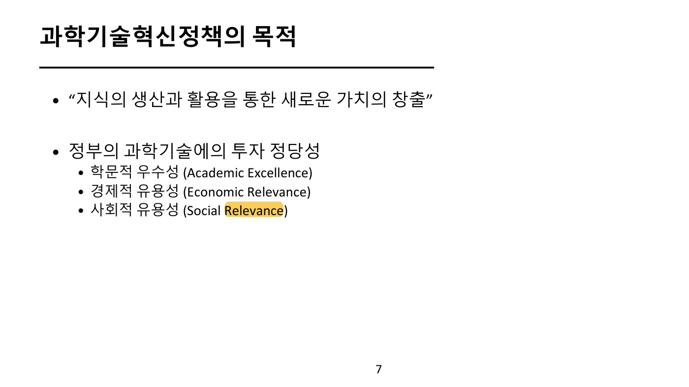
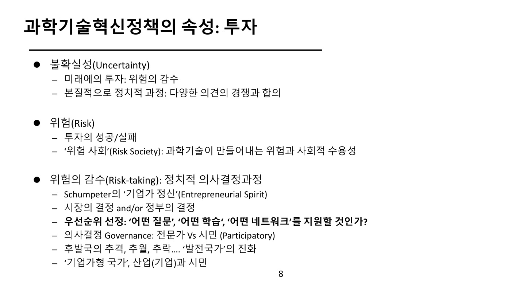
1) 목적과 세 가지 정당성 시험 포인트
| 정당성 | 쉬운 말 |
|---|---|
| 학문적 우수성 (Academic Excellence) | 노벨상 타는 연구 |
| 경제적 유용성 (Economic Relevance) | 경제 성장 |
| 사회적 유용성 (Social Relevance) | 환경·노인 문제, 불치병 등 |
- 목적은 혁신의 정의(가치를 창출하는 새로운 제품·서비스·조직)와 같다.
- W05의 공동생산(co-production)과도 통한다. 가치가 창출될 때 경제적 측면만이 아니라 사회적 과정과 질서의 변화가 함께 일어난다. 다만 정책학에서는 아직 그런 말이 잘 연결되어 들어오지 않았다.
보충시험 포인트세 정당성은 뒤의 세 프레임과 대략 대응한다: 학문적 우수성 ↔ Frame 1.0, 경제적 유용성 ↔ Frame 2.0, 사회적 유용성 ↔ Frame 3.0. 그리고 SIS 강의 후반에 교수님은 여기에 네 번째 — 기술 안보(technological security)를 붙인다 → W07-2/10.
2) 속성: 불확실성 · 위험 · 위험 감수
| 속성 | 내용 |
|---|---|
| 불확실성 | 미래에의 투자 → 위험의 감수. 본질적으로 정치적 과정: 다양한 의견의 경쟁과 합의 |
| 위험 | 투자의 성공/실패 + '위험 사회'(Beck): 과학기술이 만들어내는 위험과 사회적 수용성 |
| 위험의 감수 | 정치적 의사결정 과정. Schumpeter의 기업가 정신. 시장의 결정 and/or 정부의 결정. 우선순위 선정. 의사결정 거버넌스: 전문가 vs 시민 |
보충위험이 두 종류라는 점이 포인트다. 돈을 잃을 위험(투자 위험)과, 성공한 기술이 사회에 끼치는 위험(위험사회). 두 번째는 W05-1/05 함의의 맥락·아고라에서 다룬 문제다.
3) entrepreneur는 '기업가'보다 '혁신가' 시험 포인트
원래 처음에 Schumpeter가 얘기한 앙트러프러너는, 매일매일 경제 활동이 돌아가는데 어떤 애들이 꼭 사고를 치는 애도 있는 거예요. 딴짓을 하는 놈들이 와서 이 사이클을 흐트러버리는 애들. 새로운 결합을 만들어냈어. 그런 의미이기 때문에 더 정확히 얘기하면 '혁신가'라는 말이 더 나아요. 기업가는 매일 비즈니스 하는 것도 강하게 담고 있기 때문에.
4) 진화경제학 vs 신고전파 — 균형은 없다
- 신고전파는 수요와 공급의 균형(equilibrium)이 있다고 본다. Schumpeter를 따르는 진화경제학은 균형은 없다고 본다. 사고 치는 애들이 늘 있어 항상 움직이고 있기 때문.
- 벤처가 결국 그것이다 — 투자해서 흔들어 틈새를 만드는 것.
보충W03/11 Hayek(경쟁은 발견 절차), W03/14(진화경제학의 발견비용)와 같은 계열의 생각이다. 균형이 없으니 정책도 "최적 배분"이 아니라 불확실성 속의 선택이 된다 → 그래서 정치적 과정.
수업에서 나온 논점
- 보충p8 마지막 줄들 — "의사결정 Governance: 전문가 vs 시민", "'기업가형 국가', 산업(기업)과 시민" — 은 이 강의가 결국 시민의 등장으로 가는 복선이다. 교수님은 기업가형 국가(entrepreneurial state) 개념을 비판하는 글을 쓰고 있다고 했다 → W07-1/03.
보충 사례 보충
- 보충Beck (1986) 『위험사회』: 체르노빌 사고 직후 출간. 근대화가 만든 위험(원전·화학물질)이 계층을 가리지 않고 퍼진다는 주장. "빈곤은 위계적이고 스모그는 민주적이다."
수업 프레임에서의 위치
- 정책을 "정치적 과정"으로 규정하는 이 대목이, W06 Q4 토론의 "이거는 정치적인 문제입니다. 정답이 있는 문제가 아닙니다"(W05-2/07)와 이어진다.
출처 · 태그
리딩
- Schumpeter (1934)
- Beck (1992)
수업노트
- 수업노트/W07_강의기록_261017.md §2-1, §2-2
태그
예상 퀴즈 포인트
- 정부의 과학기술 투자 정당성 세 가지를 쓰고, 각각이 혁신정책의 세 프레임과 어떻게 대응하는지 설명하라. 서술형
- 과학기술혁신정책이 "본질적으로 정치적 과정"인 이유를 불확실성·위험 개념으로 설명하라. 서술형
- 교수님이 entrepreneur를 '기업가'보다 '혁신가'로 번역해야 한다고 본 이유를 Schumpeter와 진화경제학(균형 없음)으로 설명하라. 서술형
우선순위 설정과 기술 다양성 — n분의 1인가 다양성인가
Priority setting; technology variety vs equal sharing; policy instrument typology (Edler & Georghiou 2007)
한 줄 정의
과학기술정책의 기본 질문은 "어떤 질문, 어떤 학습, 어떤 네트워크를 지원할 것인가"라는 우선순위 설정(priority setting)이다. 정부는 벤처투자자처럼 "돈 많이 벌 회사"만 고르면 안 되고, 기술 다양성(technology variety)을 늘리는 목표도 가져야 한다. 다만 지원을 나눠 주는 것이 다양성을 키우는 일인지, 똑같은 애들에게 n분의 1 하는 것인지를 따져야 한다.
쉽게 말하면 보충
텃밭에 씨앗을 뿌린다. 같은 상추 씨를 열 고랑에 나눠 뿌리면 "공평하게 나눴지만 다양하진 않다"(n분의 1). 상추·고추·토마토를 고랑마다 다르게 뿌려야 어느 해 병충해가 와도 살아남는 밭(다양성)이 된다. 그리고 각 고랑이 스스로 "나는 고추 밭이다"라고 말할 줄 알아야 한다.
핵심 내용
슬라이드 (W07a p8 아래쪽, p9)
p8 '위험의 감수' 항목: 우선순위 선정 — '어떤 질문', '어떤 학습', '어떤 네트워크'를 지원할 것인가? / 의사결정 Governance: 전문가 Vs 시민 (Participatory) / 후발국의 추격, 추월, 추락…'발전국가'의 진화 / '기업가형 국가', 산업(기업)과 시민
1) 정부는 벤처투자자가 아니다
- 벤처는 돈 많이 벌 회사를 지원하면 되지만 정부는 그것만은 아니다. 그런데 정부도 자꾸 그 짓을 하려 하니 문제가 된다.
- 교수님은 기업가형 국가(entrepreneurial state) 개념을 비판하는 글을 쓰고 있다고 언급했다.
- 정부의 다른 목표: 기술 다양성(technology variety)을 늘리는 것.
보충W03/17에서 교수님은 picking winners(승자 고르기)의 실패를 비판하며 국가는 제도 건축가가 되어야 한다고 했다. "정부가 벤처투자자 흉내를 낸다"는 비판은 같은 입장이다. 보충'기업가형 국가'는 Mazzucato(2013)의 개념이며, 이 수업 후반 MOIP 주제의 Core Reading 저자다.
2) n분의 1 vs 다양성 시험 포인트
n분의 1 한다고 여러분 막 욕을 하잖아요. '나눠먹기 하는 거 아니냐.' 그거 잘 따져봐야 돼요. 다양성을 키우는 일인지, 아니면 똑같은 애들한테 그냥 n분의 1 하는 건지. 예를 들자면 서울대 10개 만들기, 따지고 보면 각 지역별로 몇 개씩 놓는 거잖아. 그러면 n분의 1하고 뭐가 차이가 나는 거야.
- 그걸 누가 결정하나? 본인들이 결정해야 한다. 광주 전남대가 부산대하고는 다르다고 얘기를 할 줄 알아야 다양성이 된다. 위에서 정해 주는 게 아니다. 근데 과연 그렇게 할 수 있느냐, 그것도 퀘스천.
보충시험 포인트핵심 구분: 나눠 주는 방식(균등 배분)이 문제가 아니라, 받는 쪽이 서로 다른 것을 하느냐가 기준이다. 같은 모양의 대학 10개는 n분의 1이고, 각자 다른 정체성의 대학 10개는 다양성이다. 그리고 그 정체성은 아래에서(국지적으로) 나와야 한다 — W03/17 "부산은 부산 단위로"와 같은 논리.
3) 정책 유형표 — "참고만" (W07a p9)
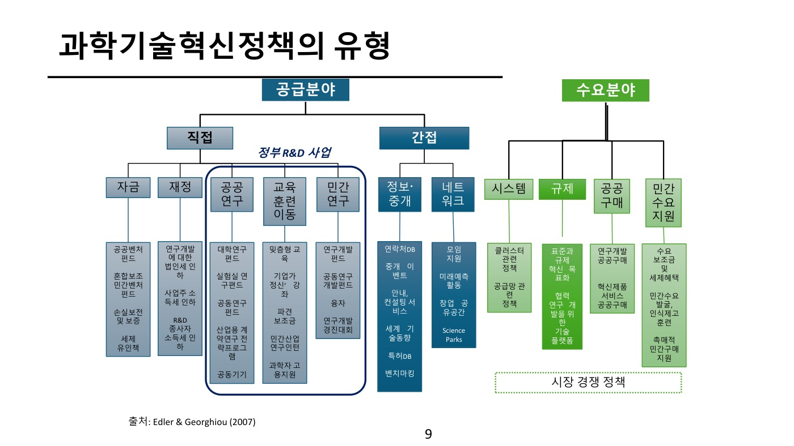
| 공급 분야 | 수요 분야 | |
|---|---|---|
| 직접 | 공공 연구, 재정(연구개발 펀드·보조금·융자), 교육훈련, 이동(파견·인턴) | 공공 구매(연구개발 공공구매, 혁신제품·서비스 공공구매) |
| 간접 | 세제 유인책, 정보·중개, 네트워크(클러스터·Science Parks·기술 플랫폼) | 시스템 규제·표준, 민간 수요 지원(수요 보조금·세제혜택, 인식제고) |
- "참고만 하라." 한국은 주로 연구 R&D 쪽에 많이 투자하지만 시장 경쟁 정책도 분명히 있다.
보충W02-1/10 수요–공급–연계 정책 프레임(Kim & Dahlman)과 같은 축이다. 한국 R&D가 공급·직접 칸에 쏠려 있다는 것이 W07-1/01의 "다 기술 개발" 관찰과 겹친다.
수업에서 나온 논점
- 수업노트 토론 질문 후보: "지역 균형 R&D 배분은 다양성 확대인가 n분의 1인가."
- '서울대 10개 만들기'는 W05에 이어(W05-1/08) 다시 나왔다.
- 보충W01/06에서 시스템 전환에 필요한 것으로 User / Technology / Citizen variety를 들었다. 기술 다양성은 그 중 하나다.
보충 사례 보충
- 보충포트폴리오 논리: 불확실성이 크면 한 곳에 몰아주는 것보다 서로 다른 시도에 분산하는 편이 실패 위험을 줄인다. 다만 같은 시도를 여러 곳에 복제하면 분산 효과가 없다 — n분의 1의 함정.
수업 프레임에서의 위치
- W07-1/02(정책은 정치적 과정)에서 "그럼 무엇을 정해야 하나"로 넘어가는 대목. 세 프레임(W07-1/04)은 이 우선순위가 역사적으로 어떻게 바뀌어 왔는지를 보여 준다.
출처 · 태그
리딩
- Edler & Georghiou (2007)
수업노트
- 수업노트/W07_강의기록_261017.md §2-3
태그
예상 퀴즈 포인트
- 과학기술정책의 기본 질문(우선순위 설정)은 무엇이며, 정부가 벤처투자자와 다른 목표를 가져야 하는 이유를 쓰라. 서술형
- "n분의 1인가 다양성인가" — 지역 균형 R&D(예: 서울대 10개 만들기)를 기술 다양성 관점에서 평가하라. 서술형
- Edler & Georghiou의 정책 유형(공급/수요 × 직접/간접)에서 한국 R&D 정책이 쏠린 칸은 어디인가? 서술형
혁신정책의 세 프레임 (Frame 1.0 · 2.0 · 3.0)
Three frames for innovation policy (Schot & Steinmueller 2018)
한 줄 정의
혁신정책은 세 번 프레임이 바뀌었다. Frame 1.0(2차대전 후)은 연구자에게 투자하면 성장한다는 과학기술정책, Frame 2.0(1980년대~)은 기업이 혁신 주체인 혁신시스템 정책, Frame 3.0(2000년대~)은 성장만으로 풀리지 않는 기후·불평등·삶의 질 문제를 시민과 함께 푸는 전환적 혁신정책이다. 그리고 한국은 주로 Frame 1.0만 하고 있다.
쉽게 말하면 보충
마을을 살리는 방법에 대한 생각이 세 번 바뀌었다.
| 1.0 | "똑똑한 박사를 모셔 오면 마을이 산다." (연구자) |
|---|---|
| 2.0 | "박사만으론 안 된다. 가게·공장·학교가 서로 연결돼야 산다." (기업·시스템) |
| 3.0 | "가게가 잘돼도 공기가 나빠지고 이웃이 떠나면 소용없다. 주민이 뭘 원하는지부터 같이 정하자." (시민·사회문제) |
핵심 내용
슬라이드 (W07a p10–11)
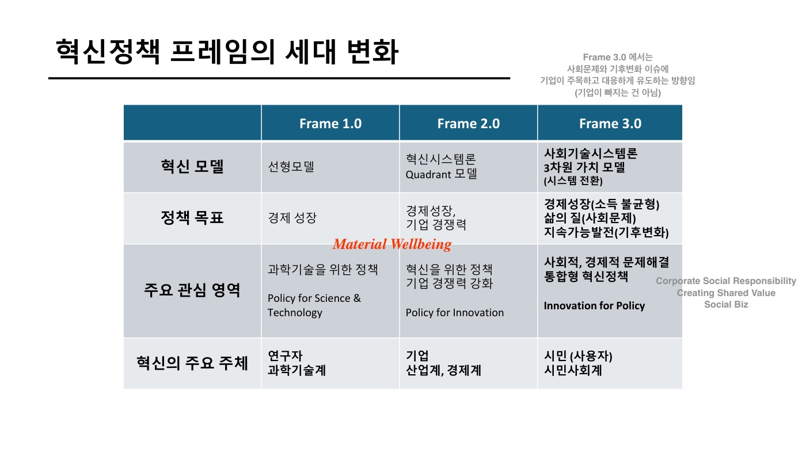
| Frame 1.0 | Frame 2.0 | Frame 3.0 | |
|---|---|---|---|
| 정책 | 연구개발정책·과학기술정책 (R&D policy) | 혁신시스템 정책 (NIS) | 전환적 혁신정책 (Transformative Innovation Policy) |
| 혁신 모델 | 선형 모델 | 혁신시스템론, Quadrant 모델 | 사회기술시스템론, 3차원 가치 모델 (시스템 전환) |
| 정책 목표 | 경제 성장 | 경제 성장, 기업 경쟁력 | 소득 불균형, 삶의 질(사회문제), 지속가능발전(기후변화) |
| 관심 영역 | Policy for Science & Technology | Policy for Innovation | Innovation for Policy (사회·경제 문제 해결) |
| 주요 주체 | 연구자, 과학기술계 | 기업, 산업계 | 시민(사용자), 시민사회 |
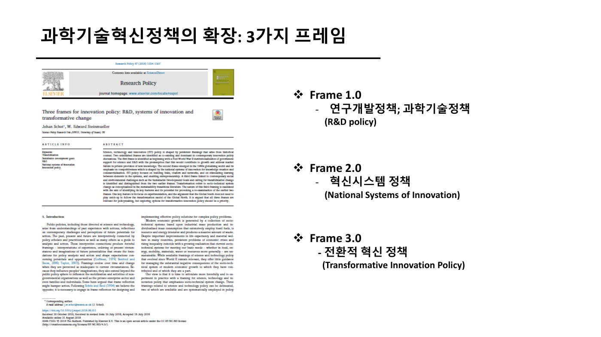
1) 왜 바뀌었나 — 역사의 흐름 시험 포인트
- 1.0: 2차 대전 후 원자폭탄의 위력을 보고 과학자에게 투자하면 뭐가 된다고 생각해 시작.
- 2.0: 1970년대에 투자했는데 성장이 안 되고 일본이 더 잘해서 혁신시스템론이 등장.
- 3.0: 2000년대 들어 경제 성장만으로는 소득 불균형·기후변화·빈곤 같은 문제가 해결되지 않아 시스템 전환과 시민이 등장.
- 저자: Schot(네덜란드 기술사학자)과 Steinmueller(미국 경제학자)의 일종의 포지션 페이퍼 — "혁신학에서 우리가 뭘 공부하는지 돌아보자."
보충시험 포인트관심 영역 행의 전치사 변화를 외워 두면 좋다. for S&T → for Innovation → Innovation for (Policy). 앞의 둘은 "과학·혁신을 위한 정책", 3.0은 "사회문제를 풀기 위해 혁신을 쓴다" — 목적과 수단이 뒤집힌다.
2) 한국은 Frame 1.0 시험 포인트
한국은 주로 이것(Frame 1.0)을 많이 하고 있어. 아까 부처들이 다 한다고 그랬잖아. 다 하자고 하는데 따지면 이거밖에 안 하고 있는 거야. 지금 시스템 정책을 해야 되는데 시스템 정책보다는 그냥 기술 개발.
- 벤처 투자를 할 때도 기술 개발만 하면 되는 게 아니라 시장도, 규제도 다 훑어봐야 한다. 그게 시스템 정책이다.
3) Q. Frame 3.0에서 기업 경쟁력은 빠지는가? — 김예나 질문
- 예나: "Frame 3.0에서는 기업 경쟁력은 빠지는 건가요? 어딘가에 머지된 건지?"
- 빠지지 않는다. 기업은 계속 비즈니스를 하고, 거기에 CSR(기업의 사회적 책임), CSV(공유가치 창출), 소셜 비즈니스 같은 기업계의 대응이 더해진다. 기업이 모이는 이유는 이윤이지만 이윤만 보지 말고 다른 것도 생각하자는 흐름. 그리고 시민·시민사회·제3섹터라는 새 플레이어가 등장했다. 목표는 물질적 풍요(material wellbeing)를 넘어서는(beyond) 삶.
- (반문) "목표는 과연 그런가? 여러분 비욘드 머티리얼, 맞아? 월급 더 받는 거 원하지?"
보충시험 포인트이 답은 다음 핵심과 이어진다 — 세 프레임은 대체가 아니라 공존한다(W07-1/09). 3.0이 와도 2.0의 경쟁력 목표는 남는다. W06/12 Lundvall의 "대체가 아니라 결합"과 같은 구조다.
수업에서 나온 논점
- 보충시험 포인트W06/12 Lundvall(2024)의 세 프레임 결합(성장·과학기술 / NIS / TIP·STS)과 거의 같은 구도다. Lundvall은 Frame 2.0의 창시자로서 3.0을 끌어안으려 했고, Schot & Steinmueller는 3.0 쪽에서 1.0·2.0을 돌아본다.
- 보충교수님이 강의 첫머리에 밝힌 목적 — "왜 시민이 등장하는지를 정책의 역사로 설명" — 이 이 표의 마지막 행(연구자 → 기업 → 시민)이다.
보충 사례 보충
- 보충TIPC(Transformative Innovation Policy Consortium): Schot이 이끈 SPRU 기반 국제 컨소시엄. 핀란드·노르웨이·스웨덴·남아공·콜롬비아 등의 정책기관이 참여해 Frame 3.0을 실제 정책에 적용하는 실험을 했다.
수업 프레임에서의 위치
- W01 Core Reading(R1, Schot & Steinmueller 2018)의 본편. W01 INDEX에 리딩 후보로만 있던 개념이 W07에서 강의됐다.
- 혁신 주체가 연구자 → 기업 → 시민으로 이동한다는 이 표가, W03/16·W05-1/09·W06/10의 "시민의 자리" 비교들을 하나로 묶는 큰 그림이다.
출처 · 태그
리딩
- Schot & Steinmueller (2018) Three frames for innovation policy ★W1 Core Reading
수업노트
- 수업노트/W07_강의기록_261017.md §3 도입, §3-0
태그
예상 퀴즈 포인트
- 혁신정책의 세 프레임을 혁신 모델·정책 목표·관심 영역·주요 주체 기준으로 비교하라. 비교형
- 각 프레임이 등장한 역사적 배경을 설명하라. (원자폭탄 → 일본의 추격 → 기후·불평등) 서술형
- Frame 3.0에서 기업 경쟁력은 사라지는가? 교수님의 답(CSR·CSV, 새 플레이어, 공존)을 근거로 논하라. 서술형
- "한국은 주로 Frame 1.0을 하고 있다"는 진단의 근거를 쓰라. 서술형
Frame 1.0 — 선형 모델과 '끝없는 프론티어'
Frame 1.0 — R&D policy, the linear model, Science the Endless Frontier (Bush 1945)
한 줄 정의
Frame 1.0은 국가가 과학 연구에 투자하면 새 발견이 R&D를 거쳐 실용화로 흘러간다는 믿음이다(Bush 1945). 기초 → 응용 → 개발로 한 방향으로 흐르는 선형 모델, 과학기술 공급 중심주의이며, 정책의 주인공은 연구자다. 교수님은 이 믿음 밑에 미국의 '프론티어' 상상력이 깔려 있다고 본다.
쉽게 말하면 보충
수도관 모델이다. 맨 위 저수지(기초과학)에 물(돈)을 부으면, 관을 따라 정수장(응용연구)과 공장(개발)을 거쳐 수도꼭지(제품)로 저절로 나온다. 위에 많이 부을수록 아래에서 많이 나온다고 믿는다. 관이 중간에 새거나 막히는지는 묻지 않는다.
핵심 내용
슬라이드 (W07a p12–13)
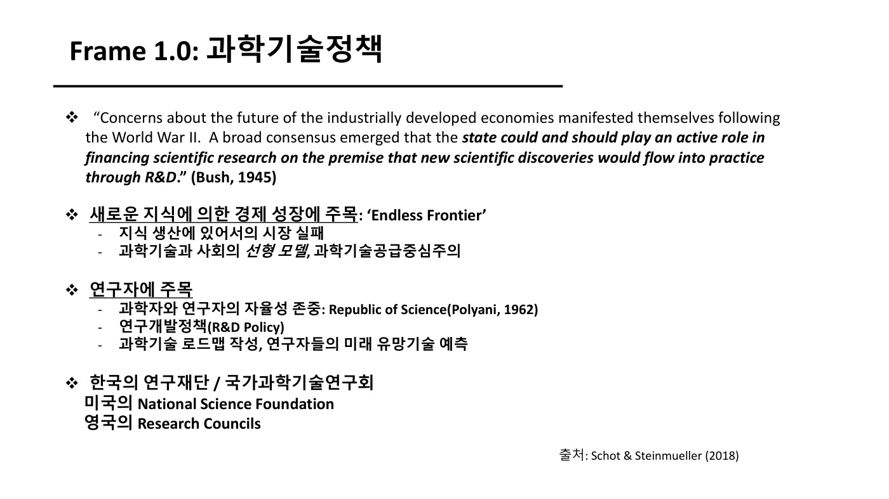
- Bush (1945): 2차대전 후 국가가 과학 연구 재원을 적극 지원해야 한다는 합의 — "new scientific discoveries would flow into practice through R&D."
- 새로운 지식에 의한 경제 성장에 주목: 'Endless Frontier' — 지식 생산에 있어서의 시장 실패, 과학기술과 사회의 선형 모델, 과학기술공급중심주의
- 연구자에 주목: 과학자와 연구자의 자율성 존중 — Republic of Science (Polanyi 1962), 연구개발정책, 과학기술 로드맵, 연구자들의 미래 유망기술 예측
- 기관: 한국의 연구재단·국가과학기술연구회, 미국 NSF, 영국 Research Councils
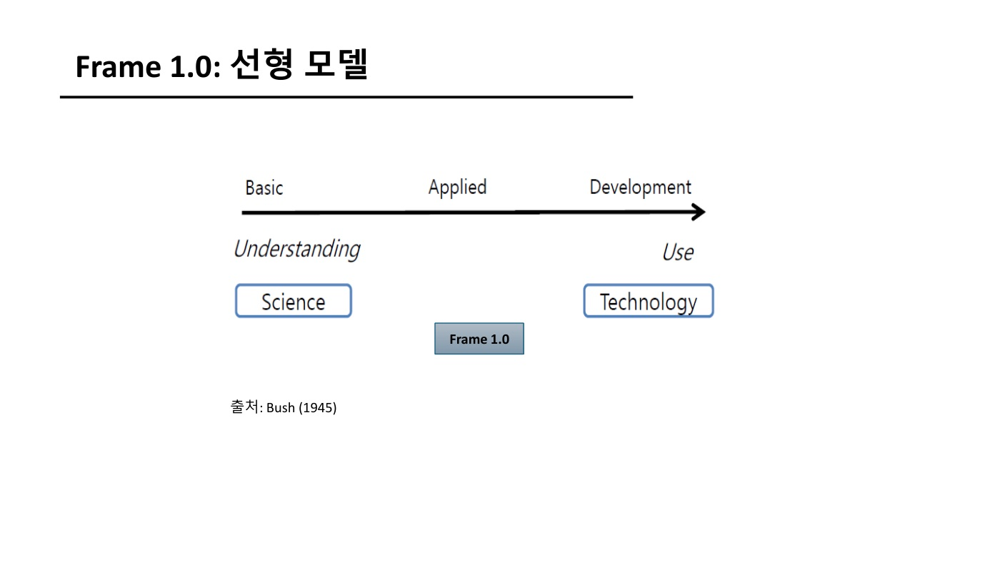
1) '프론티어'라는 미국적 상상력 시험 포인트
프론티어 정신은 항상 있었잖아요. 동부에 상륙해서 계속 서부로 확장 확장 확장하는 거잖아요. 물론 거기서 네이티브 인디언들을 다 쫓아내고 복잡한 과정이 있었습니다. 어쨌든 그 프론티어가 엔드리스 프론티어로, 과학으로 나왔죠. 사이언스 픽션. 걔네는 그 마인드셋이 있는 거예요.
유럽의 사이언스 픽션은 뭐예요? 반지의 제왕, 해리포터. 우리의 사이언스 픽션은 전설의 고향. 중국은? 무협지. 실제는 상상에서 상상해야 돼요. 이건 농담이 아니고 잘 생각을 해보세요. 사람들이 어떤 이미지네이션을 갖고 꿈을 꾸는지.
- 한국도 승리호, 외계+인 같은 시도로 인식의 지평이 넓어지고 있다. 미국의 스타트렉에서는 기본 언어가 과학기술이다.
- 그래서 기초 → 응용 → 개발이라는 선형 모델이 우리 머릿속에 꽉 박혔다. 이해(understanding)에 투자하면 사용(use)으로 연결된다는 논리.
보충시험 포인트교수님의 요점: 정책 모델은 중립적인 기술 설계가 아니라 한 사회의 상상력에서 나온다. 이건 W05-2의 시민 인식론(나라마다 지식을 믿는 방식이 다르다)과 같은 발상이다.
2) Frame 1.0의 정당화 논리 = 시장 실패 보충
"지식 생산에 있어서의 시장 실패." 보충기초연구는 성과를 독점하기 어렵고(비배제성) 결과가 불확실해서 민간이 과소투자한다 → 정부가 메꾼다(Nelson 1959, Arrow 1962). W03/13 시장 실패 vs 발견 실패에서 교수님이 "Nelson·Arrow 계보"라고 부른 바로 그 논리이고, W02-2의 '고전적 공공재 논리'(보류)도 같은 것이다.
수업에서 나온 논점
- 보충W05-1/01 Mode 1(학문 분과·동료평가 중심 지식 생산)이 Frame 1.0의 지식 생산 쪽 짝이다. 'Republic of Science' — 과학자 공동체의 자율 — 가 Mode 1의 품질 관리 방식이다.
- 보충선형 모델이 후발국에 맞지 않았다는 것이 W02-1/09 역방향 기술 궤적(성숙기술 흡수 → 자체 R&D)이다. 한국은 선형 모델의 반대 방향으로 추격했다.
보충 사례 보충
- 보충Vannevar Bush: 2차대전 중 미국 과학연구개발국(OSRD) 국장으로 맨해튼 프로젝트 등 전시 연구를 총괄했다. 루스벨트의 요청에 대한 답신이 Science, the Endless Frontier(1945)이고, 이것이 1950년 NSF 설립으로 이어졌다.
수업 프레임에서의 위치
- 세 프레임의 출발점이자 한국이 아직 머물러 있는 곳(W07-1/04). 이후 Frame 2.0은 이 선형 모델을 "꺾는" 것에서 출발한다 → W07-1/06.
출처 · 태그
리딩
- Bush (1945)
- Polanyi (1962) The Republic of Science
- Schot & Steinmueller (2018)
수업노트
- 수업노트/W07_강의기록_261017.md §3-1
태그
예상 퀴즈 포인트
- Frame 1.0(과학기술정책)의 핵심 가정과 선형 모델을 설명하라. 정책의 정당화 논리(시장 실패)와 주요 주체는 무엇인가? 서술형
- 교수님이 선형 모델 밑에 '프론티어' 상상력이 있다고 본 이유를 설명하라. 서술형
- 비교형: Frame 1.0의 지식 생산 방식과 Mode 1은 어떻게 대응하는가? 비교형
Frame 2.0 — 혁신시스템 정책과 Stokes의 Quadrant 모델
Frame 2.0 — systems-of-innovation policy; Pasteur's quadrant (Stokes 1997)
한 줄 정의
Frame 2.0은 선형 모델에 대한 의구심 — 과학 강국 영국은 산업이 약하고, 과학이 약한 일본·한국은 잘한다 — 에서 나왔다. 초점이 지식 생산 → 혁신(상용화), 연구자 → 기업으로 옮겨 가고, 정책 근거는 시스템 실패가 된다. 지식 모델로는 선형 축을 반으로 꺾은 Stokes의 Quadrant 모델(쓰려고 하면서 원리까지 파고드는 '파스퇴르 사분면')이 대응한다.
쉽게 말하면 보충
수도관 모델(1.0)이 틀렸다는 걸 알게 됐다. 물을 위에 부어도 동네마다 나오는 양이 달랐다. 이유를 보니 관 자체보다 동네 배관망과 이웃끼리의 연결이 문제였다(시스템). 그리고 물이 위에서 아래로만 흐르는 게 아니라, 수도꼭지 쪽에서 "왜 물이 탁하지?" 하고 거꾸로 저수지까지 조사하러 올라가기도 한다(파스퇴르 사분면).
핵심 내용
슬라이드 (W07a p14)
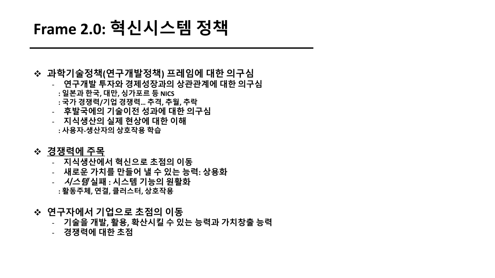
| 항목 | 내용 |
|---|---|
| 의구심 | R&D 투자와 경제성장의 상관관계 / 일본·한국·대만·싱가포르 등 NICs — 추격, 추월, 추락 / 후발국 기술이전 성과 / 지식생산의 실제 현상: 사용자–생산자 상호작용 학습 |
| 경쟁력에 주목 | 지식생산에서 혁신으로 초점 이동 / 새 가치를 만드는 능력: 상용화 / 시스템 실패: 활동주체·연결·클러스터·상호작용 |
| 초점 이동 | 연구자에서 기업으로 — 기술을 개발·활용·확산시킬 능력과 가치창출 능력 |
1) 선형 모델이 깨진 이유 시험 포인트
- 막 투자했는데 일본이 더 잘한다. 특히 영국은 과학은 발달했는데 산업은 아니다. 한국·일본·대만은 과학이 별로 없는데 잘한다.
- 선형이었다면 기술 이전받은 나라는 다 잘해야 하는데 그렇지 않다 → 지식 생산의 실제 현상(사용자–생산자 상호작용 학습)을 이해하게 됐고 혁신학(innovation studies)이 생겼다.
하이에크 말이 맞는 거죠. 물론 하이에크가 대놓고 저 얘기를 하지 않았어요. 경제 문제를 얘기했지 기술 개발 문제를 얘기한 건 아니지만, 전체 시스템이 흘러간다는 소셜 프로세스라는 거를 이제 알게 된 겁니다.
2) Stokes의 Quadrant 모델 (W07a p15) 시험 포인트
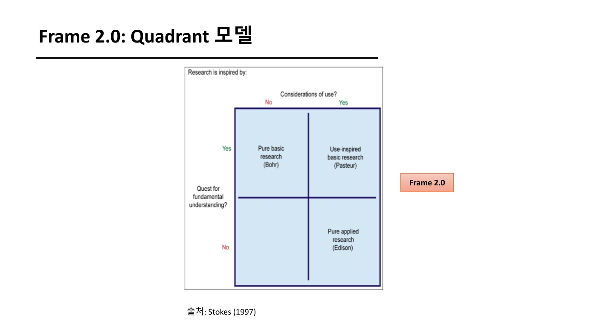
| 실용 고려 없음 | 실용 고려 있음 | |
|---|---|---|
| 근본 이해 추구 있음 | 순수 기초연구 (Bohr) | 사용 지향 기초연구 (Pasteur) |
| 근본 이해 추구 없음 | (빈칸) | 순수 응용연구 (Edison) |
- 선형 모델의 축(이해 ↔ 사용)을 반으로 딱 꺾은 것.
쓰려고 하는데 기초 리서치까지 하는, 지금 다 일어나는 거죠. 옛날에는 그냥 이렇게 해서 되면 됐어, 끝 했는데, 이제 '이게 왜 되지?' 계속 들어가는. 지금 AI도 막 하다 됐어. 근데 이제 AI 사이언스를 막 하는 거죠. Anthropic이 AI 사이언스를 하는 것 같아요. 애들이 다 끌려가는 거 보니까.
보충시험 포인트핵심은 이해와 사용이 한 줄의 양 끝이 아니라 서로 독립된 두 축이라는 것. 그래서 "쓰려고 하는 연구"가 동시에 "가장 근본적인 연구"일 수 있다. 파스퇴르는 우유·포도주가 상하는 문제(사용)를 풀다가 미생물학(이해)을 세웠다. AI는 먼저 되고 나서 "왜 되지?"를 묻는 — 사용에서 이해로 거슬러 가는 — 최신 사례다.
3) 국가혁신시스템 그림 — 기업이 가운데 (W07a p16)
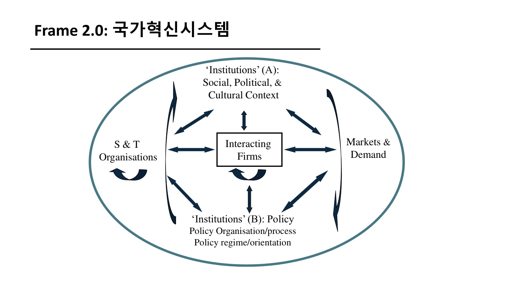
이 그림은 잘 기억을 해두시는 게 좋을 것 같아요. 국가혁신시스템을 보면 기업을 딱 가운데 두고 과학기술, 시장, 사회문화적 제도, 정책 제도 이렇게 구분을 해서. 포인트는 Frame 2.0에서는 기업이 혁신의 주체라는 거.
구성: Interacting Firms(가운데) / S&T Organisations / Markets & Demand / 'Institutions' (A): Social, Political & Cultural Context / 'Institutions' (B): Policy (organisation·process·regime)
보충W06/01에서 교수님이 같은 말("기업을 딱 가운데 두고 있어")을 했다. 두 주 연속 강조한 그림이다.
수업에서 나온 논점
- 보충Frame 2.0의 정책 근거 시스템 실패는 W01/06 시장 실패 · 시스템 실패 · 전환 실패의 두 번째 칸이다. 세 프레임과 세 실패가 순서대로 대응한다: 1.0↔시장 실패, 2.0↔시스템 실패, 3.0↔전환 실패.
보충 사례 보충
- 보충영국 패러독스: 노벨상과 논문 영향력은 최상위권인데 제조업 생산성과 상용화가 약하다는 '영국병' 논의가 1960~80년대 내내 있었다. 이것이 SPRU 같은 혁신 연구 기관이 영국에서 생긴 배경 중 하나로 꼽힌다.
수업 프레임에서의 위치
- W06 NIS 강의가 이론이었다면, 여기는 그 NIS가 정책 프레임(2.0)으로 쓰인 모습이다.
출처 · 태그
리딩
- Stokes (1997) Pasteur's Quadrant
- Schot & Steinmueller (2018)
수업노트
- 수업노트/W07_강의기록_261017.md §3-2
태그
예상 퀴즈 포인트
- Frame 2.0이 등장한 배경(선형 모델에 대한 의구심)과 핵심 변화(지식생산→혁신, 연구자→기업, 시스템 실패)를 설명하라. 서술형
- Stokes의 Quadrant 모델을 설명하고, 선형 모델과 무엇이 다른지 쓰라. ('파스퇴르 사분면'의 의미와 AI 사례) 서술형
- 비교형: 세 프레임과 W01의 세 가지 실패(시장·시스템·전환)는 어떻게 대응하는가? 비교형
Frame 3.0 — 전환적 혁신정책과 '사회적 기능'
Frame 3.0 — Transformative Innovation Policy; social function; 3-dimensional value model; socio-technical system
한 줄 정의
Frame 3.0은 기술이 아니라 사회적 기능(social function)에서 출발하는 혁신정책이다. 에너지 기술이 아니라 우리가 어떻게 사는가, 전기차가 아니라 우리가 어떻게 움직이는가(모빌리티)를 묻는다. 기후변화 같은 거대 과제를 풀기 위해 공급뿐 아니라 소비·활용·규제·관습까지 바꾸는 시스템 전환을 목표로 하고, 그 과정에 시민이 들어온다.
쉽게 말하면
교수님의 자율주행 예시가 그대로 비유다. "자율주행 기술을 우리도 해야 한다, 중국이 한다"가 기술 출발(1.0·2.0)이라면, "자율주행차가 왜 필요한 거야? 누구에게?" — 버스가 끊긴 시골의 노인들 — 에서 출발하는 것이 3.0이다. 거기서는 빨리 갈 필요도 없고, 노인들은 돈이 없으니 공공이 할 수밖에 없다. 그래서 기술 문제가 정치적 문제, 공공서비스 문제가 된다.
핵심 내용
슬라이드 (W07a p17)
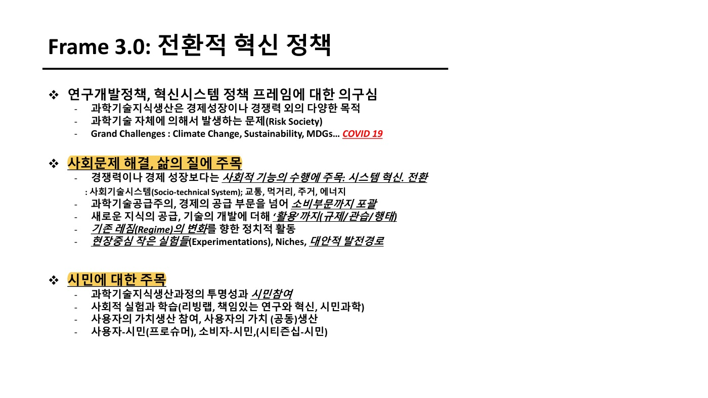
| 항목 | 내용 |
|---|---|
| 의구심 | 과학기술지식생산은 경제성장·경쟁력 외의 다양한 목적 / 과학기술 자체가 만드는 문제(Risk Society) / Grand Challenges: Climate Change, Sustainability, MDGs, COVID-19 |
| 사회문제·삶의 질 | 경쟁력보다 사회적 기능의 수행: 시스템 혁신, 전환, 사회기술시스템(교통·먹거리·주거·에너지) / 공급을 넘어 소비 부문까지 / 개발에 더해 '활용'까지(규제·관습·행태) / 기존 레짐 변화를 향한 정치적 활동 / 현장 중심 작은 실험, Niches, 대안적 발전경로 |
| 시민 | 지식생산의 투명성과 시민참여 / 사회적 실험과 학습(리빙랩, 책임있는 연구와 혁신, 시민과학) / 사용자의 가치 (공동)생산 / 사용자-시민(프로슈머), 소비자-시민, 시티즌십-시민 |
1) 기술이 아니라 사회적 기능을 본다 시험 포인트
옛날에 에너지 하면 다 재생에너지 무슨 에너지, 다 기술 얘기잖아. 모빌리티도 전기자동차 하이브리드 다 기술. 정작 중요한 거는 모빌리티예요. 우리가 어떻게 움직이는지. 움직임이라는 소셜 펑션을 함에 있어서 수단으로 사용되는 기술을 보는 거예요. 그전까지는 다 기술만 봤어요. 지금도 다 AI 기술만 보는 거지.
2) 세 가지 사례
자율주행 시험 포인트
자율주행차가 왜 필요한 거야? 기업 입장에서는 드라이버 코스트 줄이려는 거, 그리고 움직이는 시간에도 딴짓 할 수 있게 스페이스를 주겠다는 거잖아요. 정말 그게 필요한가 생각을 해봐야죠. 정말 필요한 사람도 있긴 있어요. 시골의 노인들.
중국에서 하고 어디서 하는데 우리는 안 하고 있다, 막 겁을 주죠. 어디 필요한데? 어디에 쓸 건데? 시장을 먼저 보라는 얘기야. (…) 그러면 할아버지 할아버지가 돈이 어디 있어? 퍼블릭이 할 수밖에 없는 거예요. '시골에서 살겠다'는 것을 위해서 그걸 하자고 결정이 돼야 되는 거야. 그러면 그게 정치적인 문제, 공공서비스 문제가 되는 거죠.
교육: "누구나 스카이를 갈 수 있다 — 그 속에는 누구나 가야 된다가 숨겨져 있다. 진짜 꼭 그래야 돼?" 대학에 왜 가는지, 그 사회적 기능을 생각해야 한다.
보건의료 데이터: AI로 맞춤형 의료를 한다는데, 내 입장에서 정말 나아지는 게 뭔가? 내 데이터를 주면 보험료를 깎아 준다든지, 건강이라는 사회적 기능이 들어가야 한다. 이런 문제는 기업 혼자 통제할 수 없고 시민사회가 들어와야 한다.
- "너무 기업 마인드로 생각을 하다 보니까 소비자 마인드, 시민 마인드로 아직 생각이 덜 바뀌었어요. 쉽지가 않아요."
보충시험 포인트자율주행 사례는 W05-2/07 응급 서비스를 기본권으로 정하면 시장이 달라진다와 같은 논리다. "시골에서 살 권리"를 정치적으로 정하면, 그때 자율주행 버스 시장이 생긴다.
3) Small is Beautiful이 주류가 된 이유
- Schumacher Small is Beautiful(1970년대)은 시민사회·환경 운동으로 시작했지만 이제는 비즈니스가 되는 형국이다. 왜 주류가 되었나 — ① 자본주의 시장과 인류 사회가 개인에게 포커싱하는 방향으로 발전했고, ② 디지털 기술이 이를 가능하게 했다.
4) 3차원 가치 모델 (W07a p18) — 교수님 작성 시험 포인트
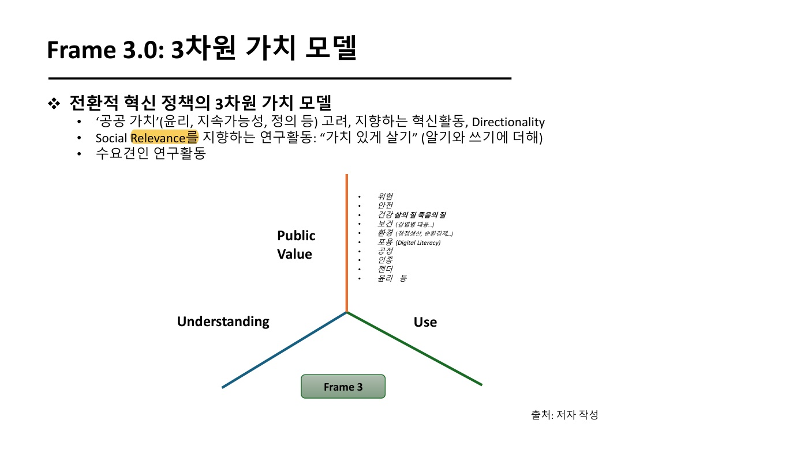
- Stokes의 두 축(이해 Understanding · 사용 Use)에 공공가치(Public Value)라는 축을 "억지로" 하나 더 붙인 것. 출처: 저자(교수님) 작성.
- 공공 가치(윤리, 지속가능성, 정의 등)를 지향하는 혁신활동 — Directionality / Social Relevance 지향 연구: "가치 있게 살기"(알기와 쓰기에 더해) / 수요견인 연구활동
- 공공가치 축의 예: 위험·안전·건강, 삶의 질·죽음의 질, 보건(감염병 대응), 환경(청정생산·순환경제), 포용(Digital Literacy), 공정·인종·젠더·윤리
보충시험 포인트세 축을 한 문장으로: 알기(이해) · 쓰기(사용) · 가치 있게 살기(공공가치). Frame 1.0은 알기, 2.0은 알기+쓰기, 3.0은 셋 다.
5) 사회기술시스템 (W07a p19) — Geels
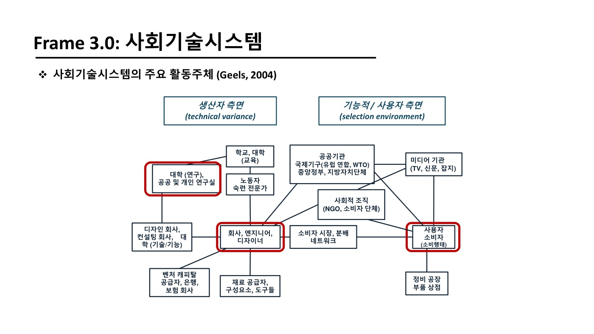
- Geels가 국가혁신시스템을 사용자·소비자까지 확대해 사회기술시스템(socio-technical system) 프레임워크를 만들었다(이후 주차에서 자세히).
- 생산자 측면(technical variance: 회사·엔지니어, 대학 연구, 재료 공급자, 벤처캐피탈…) + 기능적/사용자 측면(selection environment: 사용자·소비자, 소비자 시장, NGO·소비자 단체, 미디어, 정비공장…).
6) 정책 아젠다 비교 (W07a p20)
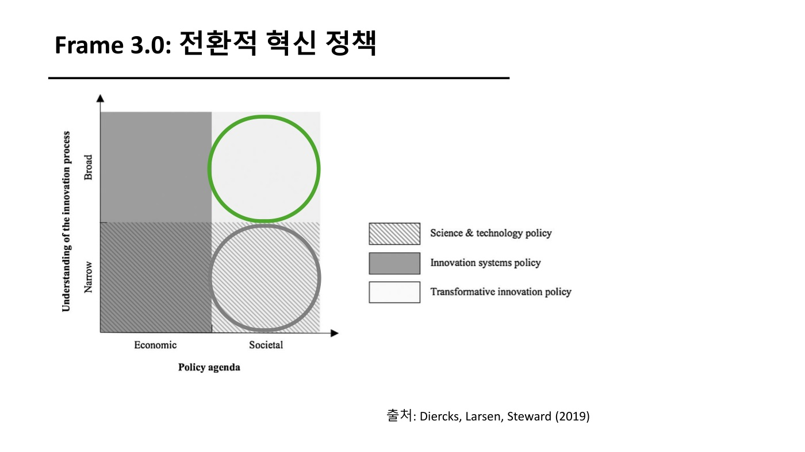
- 과학기술정책은 혁신을 좁게 보고, 혁신시스템 정책은 넓게 보되 경제에 관심, 전환적 정책은 넓게 보면서 사회 문제까지 본다.
수업에서 나온 논점
- 보충시험 포인트W06/11 "역량 확대가 방향 전환을 보장하지 않는다"에 대한 정책 쪽 답이 Frame 3.0이다. p18의 Directionality가 바로 그 '방향'이다.
- 보충W01/02 Geels(2004) 인간–제도–과학기술의 상호구성이 p19 사회기술시스템의 출처다. W01에서 문제의식으로 나온 Geels가 여기서 정책 프레임으로 다시 등장한다.
- 수업노트 정제 노트: Frame 3.0과 시민은 W05 시민 인식론, 그리고 이후 StS 주차로 이어진다.
보충 사례 보충
- 보충리빙랩(Living Lab): 실제 생활 공간에서 시민·기업·연구자가 함께 기술을 시험하는 방식. 성대골 에너지 전환 마을, 북촌 리빙랩 등 한국에서도 여러 사례가 있다. p17의 '사회적 실험과 학습'의 실제 형태다.
- 보충수요응답형 교통(DRT): 버스 노선이 끊긴 농촌에서 호출하면 오는 소형 버스·택시. 교수님의 자율주행 예시처럼 "시골 노인의 이동"이라는 사회적 기능에서 출발한 공공서비스다.
수업 프레임에서의 위치
- W01/10 강의 지도의 "구조의 변화"(TS·TIS·StS+Transition) 축이 정책 차원에서 처음 등장하는 지점. 학기 후반(StS, 전환적 사회혁신, Social Practice, MOIP)이 모두 이 프레임의 이론들이다.
출처 · 태그
리딩
- Schot & Steinmueller (2018)
- Geels (2004)
- Diercks, Larsen & Steward (2019)
- Schumacher (1973) Small is Beautiful
수업노트
- 수업노트/W07_강의기록_261017.md §3-3
태그
예상 퀴즈 포인트
- Frame 3.0(전환적 혁신정책)이 "기술이 아니라 사회적 기능을 본다"는 말의 의미를 자율주행 사례로 설명하라. 서술형
- 교수님의 3차원 가치 모델을 Stokes Quadrant 모델과 비교해 설명하라. (추가된 축과 그 의미) 비교형
- Frame 3.0에서 시민은 어떤 역할을 하는가? (p17의 시민 항목, 리빙랩·시민과학) 서술형
- 비교형: W06의 "역량 확대 ≠ 방향 전환" 비판과 Frame 3.0의 Directionality는 어떻게 연결되는가? 비교형
한국의 사회문제해결형 R&D와 부가성 — 다각화인가 워싱인가
Korea's social-problem-solving R&D; SBIR mills; additionality; zombie firms
한 줄 정의
한국 정부는 Frame 3.0을 받아들여 사회문제해결형 R&D를 시작했지만, 처음엔 각 부처가 기존 R&D에 "사회문제와 관련 있음"을 체크만 하는 방식이라 예산만 크게 부풀었다. 이후 현장 수요자 참여와 현장 적용·확산 계획을 갖춘 현장적용형 사업으로 좁혔다. 교수님의 질문: 이것은 정부 R&D의 다각화인가, 아니면 R&D 패러독스를 가리는 워싱인가.
쉽게 말하면 보충
회사가 "ESG 경영"을 선언하자 모든 부서가 기존 업무 보고서에 "친환경 관련" 체크박스만 하나씩 추가했다. 그러자 ESG 예산이 갑자기 회사 전체 예산만큼 커 보였다. 진짜 바뀐 업무는 거의 없었다. 이런 걸 그린워싱이라 부른다.
핵심 내용
슬라이드 (W07a p21)
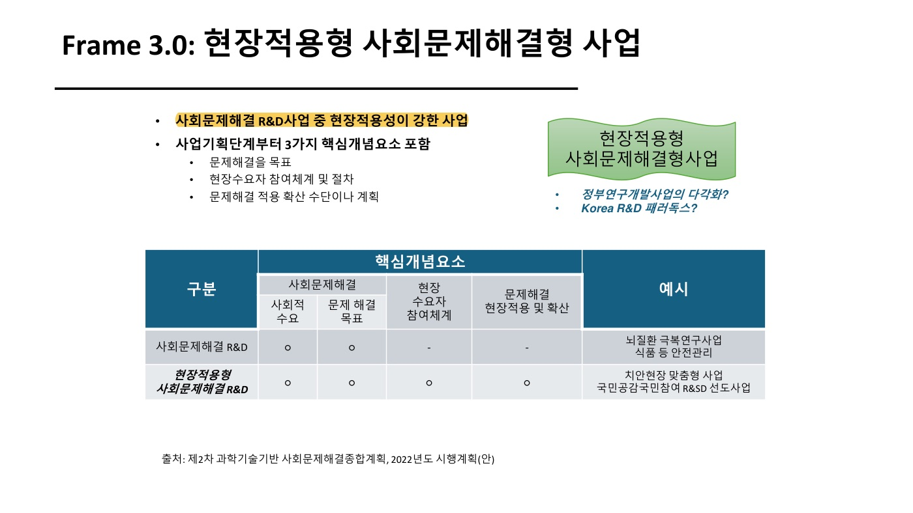
| 구분 | 사회문제해결 | 현장 수요자 참여체계 | 문제해결 현장적용·확산 | 예시 |
|---|---|---|---|---|
| 사회문제해결 R&D | ○ | ○ (사회적 수요) | – | 뇌질환 극복연구, 식품 등 안전관리 |
| 현장적용형 사회문제해결 R&D | ○ | ○ | ○ | 치안현장 맞춤형, 국민공감·국민참여 R&SD 선도사업 |
현장적용형의 세 핵심개념요소(기획 단계부터): ① 문제해결을 목표 ② 현장수요자 참여체계 및 절차 ③ 문제해결 적용·확산 수단이나 계획 질문: 정부연구개발사업의 다각화? / Korea R&D 패러독스?
1) 체크(tick)만 하는 방식
- 박근혜 정부 말기에 사회문제해결형 사업을 시작했는데, 따로 사업이 있는 게 아니라 각 부처가 "우리 R&D도 사회문제 해결과 관계있다"고 체크만 하는 방식이어서 예산이 엄청나게 큰 것처럼 나왔다.
- 약 10년을 했지만 안 되어, 현장적용형 성격을 가진 사업을 더 구체적으로 체크하도록 바꿨다.
그래서 이제 정부 연구개발 사업이 다각화된 거냐, 아니면 코리아 R&D 패러독스 — 투자는 많이 하는데 별로 나오는 게 없는 걸 그냥 보여주는 워싱 하는 그런 개념이냐. 이렇게 (질문)하시면 되겠습니다.
2) SBIR mills와 부가성 시험 포인트
미국에서도 SBIR이라고 스몰 비즈니스 이노베이션 리서치, 재미있는 말로 'SBIR 밀(mill)'이라는 게 나와요. 원래 Phase 1, 2, 3 해서 3은 상용화인데, 계속 Phase 1, 2만 왔다 갔다 하는 거예요. 뒤로 안 넘어가. 우리도 그런 애들 많잖아.
정부 R&D 투자 정당성을 얘기할 때 부가성(additionality), 아주 쉽게 말하면 마중물이에요. 정부에서 이만큼 넣으면 민간도 이만큼 늘 거다. 그런데 그렇게 안 하는 애들이 너무 많아요. 정부는 프로포절로만 판단하니까, 사업 제안서하고 결과 보고서만 왔다 갔다 하는. 한국에서는 '좀비 기업'이라고 그래요.
보충시험 포인트부가성 = 정부 지원이 없었으면 일어나지 않았을 추가 활동을 만들어 냈는가. 정부 돈이 민간 투자를 끌어내야(마중물) 하는데, 정부 과제로만 연명하면 오히려 대체(crowding out)다. SBIR mill과 좀비 기업은 부가성이 0인 경우다.
수업에서 나온 논점
- 수업노트 토론 질문 후보 1순위: "사회문제해결형 R&D는 정책 다각화인가 워싱인가" — 교수님이 직접 이렇게 질문해 보라고 제시했다.
- 수업노트 정제 노트: SBIR mills·부가성은 W05 토론(지방 산학협력, 지표 위주 평가)의 연장이다.
- 보충W07-1/01 "모든 부처가 R&D를 하지만 다 첨단기술"과 같은 뿌리다. Frame 3.0의 이름만 붙이고 실제로는 Frame 1.0(기술 공급)을 계속하면 워싱이 된다.
보충 사례 보충
- 보충SBIR(Small Business Innovation Research): 미국 연방 R&D 예산의 일정 비율을 중소기업에 배정하는 1982년 도입 제도. Phase I(타당성) → Phase II(R&D) → Phase III(상용화, SBIR 자금 아님). 'SBIR mill'은 Phase I·II 과제를 반복 수주해 연구 용역 수입으로 운영되는 기업을 비판적으로 부르는 말이다.
수업 프레임에서의 위치
- Frame 3.0(W07-1/07)이 한국 정책에 실제로 어떻게 번역되었는가를 보여 주는 사례. W06/12의 판정 — "개념적 가능성을 보이는 것과 정책 성과를 설명하는 것은 다르다" — 의 한국판이다.
출처 · 태그
수업노트
- 수업노트/W07_강의기록_261017.md §3-4
태그
예상 퀴즈 포인트
- 한국의 사회문제해결형 R&D는 정부 R&D의 다각화인가, R&D 패러독스를 가리는 워싱인가? 현장적용형의 세 요소를 근거로 논하라. (토론 질문 후보) 서술형
- 부가성(additionality)의 의미를 설명하고, SBIR mill·좀비 기업이 왜 부가성 실패 사례인지 쓰라. 서술형
세 프레임의 공존과 과학·산업·시장 역량
Coexistence of the three frames; science / industrial / market capability (R&D activity models)
한 줄 정의
Frame 1.0·2.0·3.0은 차례로 대체된 것이 아니라 겹쳐서 공존한다. 교수님은 이를 한 장의 그림으로 정리했다. 연구 활동이 연구자 → 기업가 → 시민/사용자로 어떻게 흐르는지에 따라 선형 모델(과학 역량) · Quadrant 모델(산업 역량) · 3차원 가치 모델(시장 역량)이 나뉜다. 여기서 '시장 역량'이란 시민이 자기 삶을 위해 과학기술과 시장을 쓸 줄 아는 능력이다.
쉽게 말하면 보충
집에 TV·스마트폰·AI 스피커가 함께 있다. 스마트폰이 나왔다고 TV가 사라지지 않았다. 다만 누가 리모컨을 쥐는지가 달라졌다. TV는 방송국이 정해 준 대로 보고(연구자), 스마트폰은 앱 회사가 짜 준 대로 쓰고(기업), AI 스피커는 내가 원하는 걸 말해서 시킨다(시민). 그 마지막 능력이 '시장 역량'이다.
핵심 내용
슬라이드 (W07a p22) — 공존
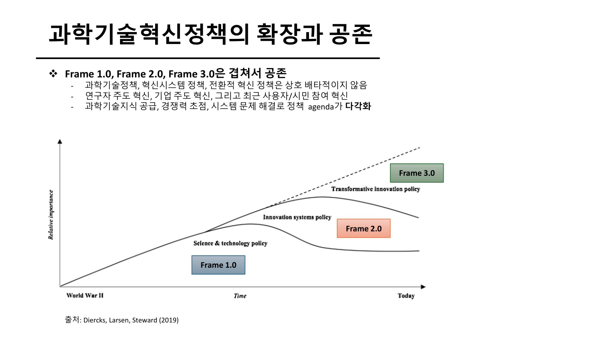
- Frame 1.0, 2.0, 3.0은 겹쳐서 공존 — 과학기술정책, 혁신시스템 정책, 전환적 혁신 정책은 상호 배타적이지 않음
- 연구자 주도 혁신, 기업 주도 혁신, 그리고 최근 사용자/시민 참여 혁신
- 과학기술지식 공급, 경쟁력 초점, 시스템 문제 해결로 정책 agenda가 다각화
- 2.0이 사라진 게 아니다.
슬라이드 (W07a p23) — 연구개발활동의 모델과 Frame (교수님 작성) 시험 포인트
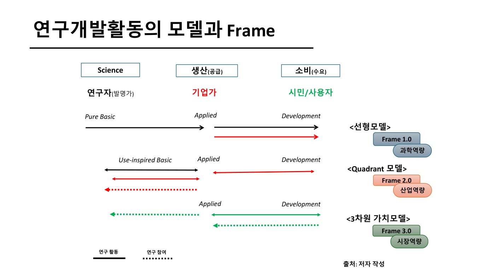
| 모델 | 흐름 | Frame | 역량 |
|---|---|---|---|
| 선형 모델 | Pure Basic → Applied → Development, 연구자 → 기업가 → 시민 한 방향 | 1.0 | 과학 역량 |
| Quadrant 모델 | Use-inspired Basic ↔ Applied ↔ Development, 연구자와 기업이 왔다 갔다 | 2.0 | 산업 역량 |
| 3차원 가치 모델 | Applied ↔ Development + 시민이 연구에 참여(점선) | 3.0 | 시장 역량 |
축: Science(연구자·발명가) — 생산·공급(기업가) — 소비·수요(시민/사용자). 실선 = 연구 활동, 점선 = 연구 참여.
'시장 역량' — 시민도 시장을 쓸 줄 알아야 시험 포인트
시장 역량이라는 것도 — 더 좋은 말을 찾으려고 그래요. 시빅 에피스테몰로지(시민 인식론) 같은 말이 좀 들어가게끔. (…) 예를 들면 내 건강을 위해서 과학기술을 사용할 줄 알아야 된다는 얘기지. 기업이 자기 비즈니스를 위해 과학기술을 사용하는 것처럼, 혁신 주체가 된다는 거는 시민들 개인들도 마켓을 사용할 줄 알아야 된다, 그 가능성이 열려 있다는 얘기.
보충시험 포인트이 그림은 교수님의 학기 전체 주장을 한 장에 담은 것이다.
- 1.0에서 시민은 화살표 끝(결과를 받는 사람)이었다.
- 3.0에서 시민은 점선으로 거슬러 올라가 연구에 참여한다.
- 그때 필요한 시민의 능력을 교수님은 '시장 역량'이라 부르고, 아직 이름을 고민 중이며 시민 인식론의 의미가 들어가길 원한다.
수업에서 나온 논점
- 보충시험 포인트W06/12 Lundvall의 "대체가 아니라 결합"과 같은 결론이다. 세 프레임을 겹쳐 쓴다는 점에서 일치한다. 다만 W06/13에서 교수님은 NIS 안에 시민 의제를 이론적으로 통합하는 것에는 반대했다. 여기서도 시민 쪽은 별도의 모델(3차원 가치 모델)과 별도의 역량(시장 역량)으로 세워 둔다 — 교수님 입장과 일관된다.
- 보충W03/16 혁신 주체로서 시민(Smith의 전문 노동자 → Hayek의 man on the spot → Potts의 공동 창작자)과 이 그림의 시민(결과 수용자 → 연구 참여자)을 나란히 놓으면 좋은 비교 답안이 된다.
- 김예나 질문(W07-1/04)에 대한 답 — 3.0에서도 기업 경쟁력은 빠지지 않는다 — 이 이 슬라이드로 정리된다.
보충 사례 보충
- 보충환자 주도 연구: 희귀질환 환자 단체가 직접 자금을 모으고 연구 우선순위를 정하는 사례(예: 미국 낭포성섬유증 재단의 신약 투자). 시민이 '연구 참여'의 점선 화살표를 그은 대표적인 경우다.
수업 프레임에서의 위치
- W07-1의 결론. 이어지는 Term paper 오리엔테이션(W07a p24)에서 이 수업의 시스템 이론 지도가 제시된다(INDEX W07-1 머리말 참고).
출처 · 태그
리딩
- Diercks, Larsen & Steward (2019)
수업노트
- 수업노트/W07_강의기록_261017.md §3-5
태그
예상 퀴즈 포인트
- "세 프레임은 겹쳐서 공존한다"는 주장을 설명하고, 교수님의 그림(p23)에서 세 모델이 각각 어떤 역량(과학·산업·시장)에 대응하는지 쓰라. 서술형
- 교수님이 말한 '시장 역량'의 의미를 시민 인식론과 연결해 설명하라. 서술형
- 비교형: Schot & Steinmueller의 세 프레임 공존과 Lundvall(2024)의 세 프레임 결합은 어떻게 같고 다른가? 비교형